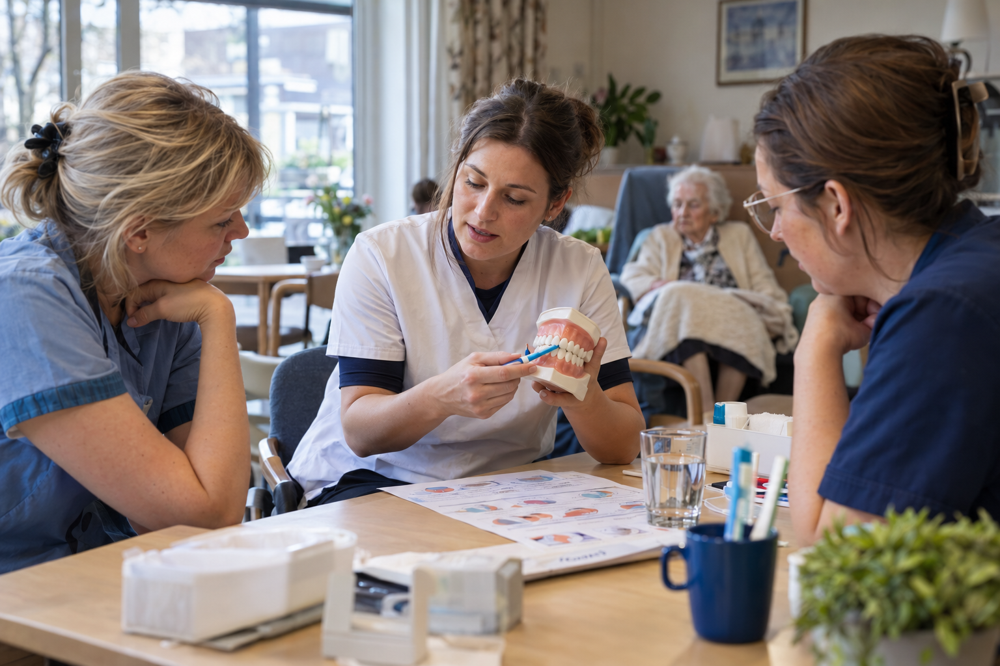

For residential care centres
Dental care,
where residents
feel at home.
Global Smile Care brings experienced dentists and assistants to residents for checkups and straightforward treatment, in familiar surroundings.

The service at a glance
One visit changes the routine.
The journey to a dental practice can be the hardest part. On-site care makes an examination easier to organise around a resident’s day.
Dental care
Practical dental care, on site.
Our mobile team visits residential care centres for dental examinations and simple treatments. We agree on visit days and timing together with your centre.
Dental checkups
Assess residents’ oral health and identify concerns that need attention.
Simple treatment
Provide straightforward dental care during planned visits to your centre.
Next steps
Discuss what is needed when care cannot be completed during an on-site visit.
The care available on site depends on each resident’s needs and the facilities at the centre. We discuss the details before visits begin.
Working together
A visit planned around your centre.
Your staff know each resident’s routine. We bring the dental expertise and work with your team to make visits fit the centre’s day.

Illustrative concept image- 01
Tell us about your centre
Share your location, residents’ needs and practical questions.
- 02
Agree on a visit plan
We discuss visit days, timing and what our team can provide on site.
- 03
Welcome the dental team
Our dentists and assistants come to your centre for examinations and appropriate simple treatments.
- 04
Decide what follows
We discuss any further care and plan future visits together.
Who we are
An established practice, now visiting care centres.
Global Smile Care welcomes patients at its practice in Antwerp-Zuid and also provides ambulant dental care in residential care centres. Our team comes to your centre to make dental care easier to arrange for residents.
Visit the Global Smile Care practiceA few practical questions
Before we begin.
Every centre works differently. We’ll discuss the details with you.
Which care can you provide at our centre?
Our team comes for dental examinations and simple treatments. We discuss what can be done on site before arranging visits.
How often can your team visit?
Visit days and timing are agreed with each care centre based on its needs.
What if a resident needs more complex care?
We discuss the next step when a need goes beyond the care available during an on-site visit.
Let's begin
Tell us about your centre.
We’ll discuss whether our ambulant service is a fit and how visits could work.